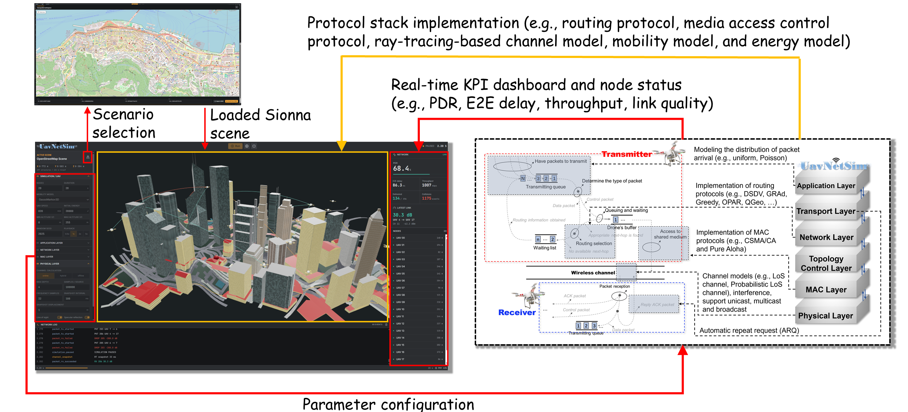

Felix, Zihao Zhou
I am going to start my doctoral career at the Department of Electrical and Electronic Engineering, The University of Hong Kong (HKU), under the supervision of Prof.Yuanwei Liu. Prior to that, I received the B.Eng. and M.Eng. degrees from the School of Eletronic and Information Engineering, South China University of Technology (SCUT), in Jun. 2022 and Jun. 2025, respectively. My recent research focuses on Performance analysis, evaluation and optimization for wireless communication systems, mobile networking and protocols. I have recently developed a Python-based simulation platform for UAV communication networks named "UavNetSim-v1" [Project link], which provides accurate modeling and simulation of packet transmissions within mobile networks, and supports users to design and verify their own protocols and algorithms. I really enjoy my research and if you are interested in my work or have any questions, feel free to reach out via email at eezihaozhou@gmail.com.

Featured Projects

UavNetSim-v1: A Python-based Simulation Platform for UAV Communication Networks
14th IEEE/CIC International Conference on Communications in China (ICCC 2025)
Publications
■ Z. Zhou, Z. Dai, L. Huang, C. Yang, Y. Xiang, J. Tang and K. -K. Wong,
"UavNetSim-v1: A Python-based Simulation Platform for UAV Communication Networks," accepted by
2025 IEEE/CIC Int. Conf. Commun. China., ICCC, 2025.
■ Y. Wei, Z. Zhou, J. Tang, N. Zhao, X. Qin and K. -K. Wong,
"An Accurate IEEE 802.11 Packet Delay Model for Single-hop UAV Networks,"
IEEE Trans. Veh. Technol., Early Access, 2025. See [Link]
■ S. Huang, J. Tang, Z. Zhou, G. Yang, M. V. Davydov and K. -K. Wong,
"A Q-Learning and Fuzzy Logic based Routing Protocol for UAV Networks,"
in 2024 Int. Conf. Wirel. Commun. Signal Process., WCSP.,
2024, pp. 1090-1095. See [Link]
■ Z. Zhou, J. Tang, W. Feng, N. Zhao, Z. Yang and K. -K. Wong,
"Optimized Routing Protocol Through Exploitation of Trajectory Knowledge for UAV Swarms,"
IEEE Trans. Veh. Technol.,
vol. 73, no. 10, pp. 15499-15512, 2024. See [Link]
■ Z. Zhou, J. Tang, W. Feng and K. -K. Wong,
"Energy-aware Routing Protocol for UAV Electronic Warfare Using Graph Attention and Fuzzy Reward,”
in 2023 IEEE Glob. Commun. Conf., GLOBECOM.,
2023, pp. 1860-1865. See [Link]
■ J. Tang, Z. Zhou, W. Feng and K. -K. Wong,
"A Distributed and Adaptive Routing Protocol for UAV-aided Emergency Networks,”
in 2023 IEEE 98th Veh. Technol. Conf., VTC2023-Fall.,
2023, pp. 1-6. See [Link]
■ H. Lin, Z. Zhang, L. Wei, Z. Zhou, T. Zheng,
"A Deep Reinforcement Learning based UAV Trajectory Planning Method for Integrated Sensing and Communications Networks,"
in 2023 IEEE 98th Veh. Technol. Conf., VTC2023-Fall.,
2023, pp. 1-6. See [Link]
■ J. Tang, Z. Peng, Z. Zhou, D. K. C. So, X. Zhang and K. -K. Wong,
"Energy-efficient Resource Allocation for IRS-aided MISO System with SWIPT,"
in 2022 IEEE Glob. Commun. Conf., GLOBECOM.,
2022, pp. 3217-3222. See [Link]
■ Z. Zhou, S. Wen, Y. Li, W. Xu, Z. Chen and W. Guan,
"Performance Enhancement Scheme for RSE-based Underwater Optical Camera Communication using De-bubble Algorithm and Binary Fringe Correction,"
Electron.,
vol. 10, no. 8, 950-965, 2021. See [Link]
■ Z. Zhou, S. Wen and W. Guan,
"RSE-based Optical Camera Communication in Underwater Scenery with Bubble Degradation,"
in 2021 Opt. InfoBase Conf. Pap., OFC.,
2021, pp. M2B-2. See [Link]
Awards
• National Scholarship for Graduate Students (2024/10)
• Excellent conclusion of National Innovative Training Project for College Students (2022/05)
• Guangzhou Automobile Group Co., Ltd. donation scholarship (2021/09)
• "Mingwei" Scholarship of School of Electronics and Information Engineering (2021/05)
Activities
Reviewer
■ IEEE Transactions on Wireless Communications (TWC)
■ IEEE Transactions on Vehicular Technology (TVT)
■ 2025 IEEE 102nd Vehicular Technology Conference (VTC2025-fall)